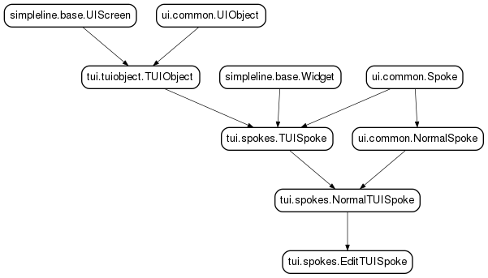

pyanaconda.ui.tui.spokes package¶
Submodules¶
pyanaconda.ui.tui.spokes.askvnc module¶
- class pyanaconda.ui.tui.spokes.askvnc.AskVNCSpoke(app, data, storage=None, payload=None, instclass=None, message=None)¶
Bases: pyanaconda.ui.tui.spokes.NormalTUISpoke

- apply()¶
- indirect¶
- input(args, key)¶
Override input so that we can launch the VNC password spoke
- refresh(args=None)¶
- title = 'VNC'¶
- class pyanaconda.ui.tui.spokes.askvnc.VNCPassSpoke(app, data, storage, payload, instclass, message=None)¶
Bases: pyanaconda.ui.tui.spokes.NormalTUISpoke

- apply()¶
- completed¶
- indirect¶
- prompt(args=None)¶
Override prompt as password typing is special.
- refresh(args=None)¶
- title = 'VNC Password'¶
- pyanaconda.ui.tui.spokes.askvnc.exception_msg_handler_and_exit(event, data)¶
Display an exception and exit so that we don’t end up in a loop.
pyanaconda.ui.tui.spokes.langsupport module¶
- class pyanaconda.ui.tui.spokes.langsupport.LangSpoke(app, data, storage, payload, instclass)¶
Bases: pyanaconda.ui.common.FirstbootSpokeMixIn, pyanaconda.ui.tui.spokes.NormalTUISpoke
This spoke allows a user to select their installed language. Note that this does not affect the display of the installer, it only will affect the system post-install, because it’s too much of a pain to make other languages work in text-mode.
Also this doesn’t allow for selection of multiple languages like in the GUI.

- apply()¶
Store the selected langsupport locales
- category¶
alias of LocalizationCategory
- completed¶
- input(args, key)¶
Handle user input.
- mandatory¶
- prompt(args=None)¶
Override default prompt with a custom prompt.
- refresh(args=None)¶
args is None if we want a list of languages; or, it is a list of all locales for a language.
- status¶
- title = 'Language settings'¶
pyanaconda.ui.tui.spokes.network module¶
- class pyanaconda.ui.tui.spokes.network.NetworkSpoke(app, data, storage, payload, instclass)¶
Bases: pyanaconda.ui.tui.spokes.EditTUISpoke
Spoke used to configure network settings.

- apply()¶
Apply all of our settings.
- category¶
alias of SystemCategory
- completed¶
Check whether this spoke is complete or not. Do an additional check if we’re installing from CD/DVD, since a network connection should not be required in this case.
- initialize()¶
- input(args, key)¶
Handle the input.
- mandatory¶
This spoke should only be necessary if we’re using an installation source that requires a network connection.
- refresh(args=None)¶
Refresh screen.
- status¶
Short msg telling what devices are active.
- title = 'Network configuration'¶
pyanaconda.ui.tui.spokes.password module¶
- class pyanaconda.ui.tui.spokes.password.PasswordSpoke(app, data, storage, payload, instclass)¶
Bases: pyanaconda.ui.common.FirstbootSpokeMixIn, pyanaconda.ui.tui.spokes.EditTUIDialog

- apply()¶
- category¶
alias of UserSettingsCategory
- completed¶
- mandatory¶
- prompt(args=None)¶
Overriden prompt as password typing is special.
- refresh(args=None)¶
- showable¶
- status¶
- title = 'Root password'¶
pyanaconda.ui.tui.spokes.progress module¶

pyanaconda.ui.tui.spokes.shell_spoke module¶
Text mode shell spoke
- class pyanaconda.ui.tui.spokes.shell_spoke.ShellSpoke(app, data, storage, payload, instclass)¶
Bases: pyanaconda.ui.tui.spokes.NormalTUISpoke

- apply()¶
- category¶
alias of SystemCategory
- completed¶
- prompt(args=None)¶
- refresh(args=None)¶
- classmethod should_run(environment, data)¶
- status¶
- title = 'Shell'¶
pyanaconda.ui.tui.spokes.software module¶
- class pyanaconda.ui.tui.spokes.software.SoftwareSpoke(app, data, storage, payload, instclass)¶
Bases: pyanaconda.ui.tui.spokes.NormalTUISpoke
Spoke used to read new value of text to represent source repo.

- apply()¶
Apply our selections
- category¶
alias of SoftwareCategory
- checkSoftwareSelection()¶
Depsolving
- completed¶
Make sure our threads are done running and vars are set.
WARNING: This can be called before the spoke is finished initializing if the spoke starts a thread. It should make sure it doesn’t access things until they are completely setup.
- initialize()¶
- input(args, key)¶
Handle the input; this chooses the desktop environment.
- ready¶
If we’re ready to move on.
- refresh(args=None)¶
Refresh screen.
- showable¶
- status¶
Where we are in the process
- title = 'Software selection'¶
- txid_valid¶
Whether we have a valid dnf tx id.
pyanaconda.ui.tui.spokes.source module¶
- class pyanaconda.ui.tui.spokes.source.SourceSpoke(app, data, storage, payload, instclass)¶
Bases: pyanaconda.ui.tui.spokes.EditTUISpoke, pyanaconda.ui.helpers.SourceSwitchHandler
Spoke used to customize the install source repo.

- apply()¶
Execute the selections made.
- category¶
alias of SoftwareCategory
- completed¶
- initialize()¶
- input(args, key)¶
Handle the input; this decides the repo source.
- ready¶
Check if the spoke is ready.
- refresh(args=None)¶
- showable¶
- status¶
- title = 'Installation source'¶
pyanaconda.ui.tui.spokes.storage module¶
- class pyanaconda.ui.tui.spokes.storage.StorageSpoke(app, data, storage, payload, instclass)¶
Bases: pyanaconda.ui.tui.spokes.NormalTUISpoke
Storage spoke where users proceed to customize storage features such as disk selection, partitioning, and fs type.

- apply()¶
- category¶
alias of SystemCategory
- completed¶
- execute()¶
- initialize()¶
- input(args, key)¶
Grab the disk choice and update things
- mandatory¶
- ready¶
- refresh(args=None)¶
- run_dasdfmt(to_format)¶
This generates the list of DASDs requiring dasdfmt and runs dasdfmt against them.
- showable¶
- status¶
A short string describing the current status of storage setup.
- title = 'Installation Destination'¶
- class pyanaconda.ui.tui.spokes.storage.AutoPartSpoke(app, data, storage, payload, instclass)¶
Bases: pyanaconda.ui.tui.spokes.NormalTUISpoke
Autopartitioning options are presented here.

- apply()¶
- category¶
alias of SystemCategory
- indirect¶
- input(args, key)¶
Grab the choice and update things
- refresh(args=None)¶
- title = 'Autopartitioning Options'¶
pyanaconda.ui.tui.spokes.time_spoke module¶
- class pyanaconda.ui.tui.spokes.time_spoke.TimeZoneSpoke(app, data, storage, payload, instclass)¶
Bases: pyanaconda.ui.common.FirstbootSpokeMixIn, pyanaconda.ui.tui.spokes.NormalTUISpoke

- apply()¶
- category¶
alias of LocalizationCategory
- completed¶
- initialize()¶
- input(args, key)¶
- mandatory¶
- prompt(args=None)¶
- refresh(args=None)¶
args is None if we want a list of zones or “zone” to show all timezones in that zone.
- status¶
- title = 'Timezone settings'¶
pyanaconda.ui.tui.spokes.user module¶
- class pyanaconda.ui.tui.spokes.user.UserSpoke(app, data, storage, payload, instclass)¶
Bases: pyanaconda.ui.common.FirstbootSpokeMixIn, pyanaconda.ui.tui.spokes.EditTUISpoke

- apply()¶
- category¶
alias of UserSettingsCategory
- completed¶
Verify a user is created; verify pw is set if option checked.
- edit_fields = [EditTUISpokeEntry(title='Create user', attribute='_create', aux='check', visible=True), EditTUISpokeEntry(title='Fullname', attribute='gecos', aux=re.compile('^[^:]*$'), visible=<function UserSpoke.<lambda> at 0x7f188d363ea0>), EditTUISpokeEntry(title='Username', attribute='name', aux=re.compile('^[a-zA-Z0-9._](([a-zA-Z0-9._-]{0,2})|([a-zA-Z0-9._-]{3}(?<!root))|([a-zA-Z0-9._-]{4,31})|([a-zA-Z0-9._-]{,30}\\$))$'), visible=<function UserSpoke.<lambda> at 0x7f188c9e7048>), EditTUISpokeEntry(title='Use password', attribute='_use_password', aux='check', visible=<function UserSpoke.<lambda> at 0x7f188c9e70d0>), EditTUISpokeEntry(title='Password', attribute='_password', aux=re.compile('.*'), visible=<function UserSpoke.<lambda> at 0x7f188c9e7158>), EditTUISpokeEntry(title='Administrator', attribute='_admin', aux='check', visible=<function UserSpoke.<lambda> at 0x7f188c9e71e0>), EditTUISpokeEntry(title='Groups', attribute='_groups', aux=re.compile('^\\s*([a-zA-Z0-9._](([a-zA-Z0-9._-]{0,2})|([a-zA-Z0-9._-]{3}(?<!root))|([a-zA-Z0-9._-]{4,31})|([a-zA-Z0-9._-]{,30}\\$))(\\s*,\\s*[a-zA-Z0-9._](([a-zA-Z0-9._-]{0,2})|([a-zA-Z0-9._-]{3}(?<!root))|([a-z), visible=<function UserSpoke.<lambda> at 0x7f188c9e7268>)]¶
- mandatory¶
Only mandatory if the root pw hasn’t been set in the UI eg. not mandatory if the root account was locked in a kickstart
- refresh(args=None)¶
- classmethod should_run(environment, data)¶
- showable¶
- status¶
- title = 'User creation'¶
pyanaconda.ui.tui.spokes.warnings_spoke module¶

Module contents¶
- class pyanaconda.ui.tui.spokes.TUISpoke(app, data, storage, payload, instclass)¶
Bases: pyanaconda.ui.tui.tuiobject.TUIObject, pyanaconda.ui.tui.simpleline.base.Widget, pyanaconda.ui.common.Spoke
Base TUI Spoke class implementing the pyanaconda.ui.common.Spoke API. It also acts as a Widget so we can easily add it to Hub, where is shows as a summary box with title, description and completed checkbox.
Parameters: 
- completed¶
- input(args, key)¶
Handle the input, the base class just forwards it to the App level.
- refresh(args=None)¶
- render(width)¶
Render the summary representation for Hub to internal buffer.
- status¶
- title = 'Default spoke title'¶
- class pyanaconda.ui.tui.spokes.EditTUISpoke(app, data, storage, payload, instclass, policy_name='')¶
Bases: pyanaconda.ui.tui.spokes.NormalTUISpoke
Spoke with declarative semantics, it contains a list of titles, attribute names and regexps that specify the fields of an object the user allowed to edit.

- CHECK = 'check'¶
- PASSWORD = re.compile('.*')¶
- edit_data = ''¶
- edit_fields = []¶
- input(args, key)¶
- refresh(args=None)¶
- visible_fields¶
Get the list of currently visible entries
- class pyanaconda.ui.tui.spokes.EditTUIDialog(app, data, storage, payload, instclass, policy_name='')¶
Bases: pyanaconda.ui.tui.spokes.NormalTUISpoke
Spoke/dialog used to read new value of textual or password data

To override the wrong input message set the wrong_input_message attribute to a translated string.
- PASSWORD = re.compile('.*')¶
- input(entry, key)¶
- prompt(entry=None)¶
- refresh(args=None)¶
- title = 'New value'¶
- class pyanaconda.ui.tui.spokes.EditTUISpokeEntry¶
Bases: builtins.tuple
EditTUISpokeEntry(title, attribute, aux, visible)
- attribute¶
Alias for field number 1
- aux¶
Alias for field number 2
- title¶
Alias for field number 0
- visible¶
Alias for field number 3
- class pyanaconda.ui.tui.spokes.StandaloneSpoke(storage, payload, instclass)¶
Bases: pyanaconda.ui.common.Spoke
A StandaloneSpoke is a Spoke subclass that is displayed apart from any Hub. It is suitable to be used as a Welcome screen.
From a layout perspective, a StandaloneSpoke provides a full screen interface. However, it also provides navigation information at the top and bottom of the screen that makes it look like the StandaloneSpoke fits into some other UI element.
Class attributes:
- preForHub/postForHub – A reference to a Hub subclass this Spoke is
- either a pre or post action for. Only one of these may be set at a time. Note that all post actions will be run for one hub before any pre actions for the next.
- priority – This value is used to sort pre and post
- actions. The lower a value, the earlier it will be run. So a value of 0 for a post action ensures it will run immediately after a Hub, while a value of 0 for a pre actions means it will run as the first thing.
Create a StandaloneSpoke instance.
- postForHub = None¶
- preForHub = None¶
- status¶
- class pyanaconda.ui.tui.spokes.NormalTUISpoke(app, data, storage, payload, instclass)¶
Bases: pyanaconda.ui.tui.spokes.TUISpoke, pyanaconda.ui.common.NormalSpoke